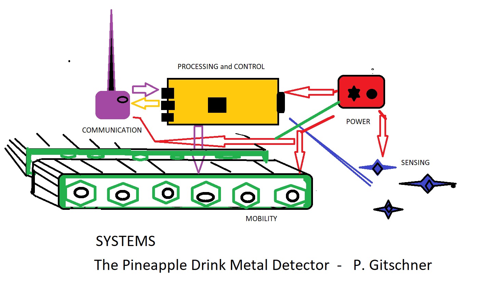

Programming for the Internet of Things Course
University of California, Irvine
Paul J Gitschner
Capstone project Week 2 :
Design document
Project Name: The Pineapple Drink Metal Detector
Tag line: ROOMBA - meets - METAL DETECTOR - meets - ALARM CLOCK
Systems Options, Evaluations and Choices with Rationel
Major systems
I see five major subsystems that will interact to produce the desired results. Each will have design options. DIAGRAM
Mobility
Processing
Sensing
Communication
Power

System : Mobility and Manouverability
Goal - a system that allows the unit to physically move in the desired enviroment, namely normal beach sand.
Unit is meant to be mechanically agile enough to allow turns required by specified search pattern. It should be vacation portable
System Design Options:
Name: Wheels
Description:
Large wheels or balloon tires with either four, six or eight wheels. Think Mars landers.
Evaluation
This would either have to be a very expensive custom built rig with a motor for each wheel or the cannabalizing of a toy that may be
too flimsy for our attempt. Wheels may not be successful on wet beach sand where it will be most of the time.
Battery power may be stretched by having multiple motors.
This system may also be too large and heavy to transport to vacation destinations, our intended working (playing) areas.
A resonable travel package would be to contain in one checkable suitcase.
Power needs, systems required, wiring diagrams, and custom programing to achieve manouverabilty would be an unknown cost and time consideration.
Name: Treads
Description:
Tank like Treads that move the unit. Steering is accompished by differential power applied to either side.
Evaluation
The larger contact surface area have been proven to be able to traverse sand. There are a number of hobbyist kits with treads already on the
market for the Arduino or Raspberry Pi hobbyist. These are size and weight friendly towards the project's portability goals.
The power needs, power control accesories and wiring diagrams are already specified. Known cost and minimal assembly and development delay.
An example of this is the OSEPP Electronics TANK01, light following/object avoidance robot kit. This is on the market in response to the number of hobbyists and courses that make these standard projects.
Name: Drone
Description:
Low flying Drone, perhaps with a skirt to make it a hover drone, meant to skim above the surface with extremely low friction.
Evaluation
Commercial drones are just getting to the food deliver stage, where they can carry some weight and fly specifically as directed. So an alternate use for our
purposes isn't beyound conjecture.
Our fixed package of sensors would be the only componant add. Weight and use-time considerations would need to be recalibrated.
The exisiting projects are not yet at the hobby kit and open source software stage yet, asfar as I know, so our alternate use, flying just off the ground, in a search pattern, avoiding low
obsticles, evaluating and alerting would need perhaps a lengthy development cycle.
New issues are the numerous ground level obsticles, (kids, dogs) at the beach.
Other considerations are the effect of mixing blown air and loose sand.
There may be flight restrictions due to the unit being a drone, even if meant to only hover.
Many tourist beaches are close to airports and these would be foreign juristrictions.It would be hard to know accurate local done laws without expensive advice.
Weather and wind may affect performance. Wildlife like seagulls may affect performance.
Subsystem Choice and Decision Rationel
Choice: Tank Treads, a hobby kit.
Rationel
I chose the OSEPP Electronics TANK01 kit.
This is on the market in response to the number of hobbyists and courses that make standard projects such as
light following/object avoidance robots.
Easily avaiable. I found it on the self at SAYAL Electronics and Hobbies in Cambridge, Ontario, Canada.
Known Cost It was $133.00 CDN.
Compatibility: the box specifies it is compatible with Arduino, Pi, and Lego etc. This vendor has numerous compatible componants.
Development time. Should have minimal assembly and development delay. The box says 10+ ages. I should be able to figure this out.
System :Processing and Programming
Goal - To allow the unit to follow search patterns as chosen by from a standard list or be programmed for an odd shapped territory chosen.
Perhaps with an AI componant where it evaluates finds and learns and have enough memmory to log its searches.
System Design Options:
Name: Custom board
Description: Build a board from scratch
Evaluation
The development time and learning curve would be beyond me and unneccessary for this single build " proof of concept" unit.
The costs of designing and trial and error developing functionalities would be much greater that can be cobbled togther from off the self componants.
Would first have to decide on a main chip and then design physical requirements and connections around that.
Programming would require choosing and setting up an operating system and deciding on a languge.
Appropriate libraries would have to be loaded, custom software written and all would be subject to memory requirements
Name: Arduino
Description: Using an Arduino Platform microprocessor board unit
Evaluation
Arduino has a number of General use Microcontroller boards with various parameter, Nano, Uno and Mega are just 3. The Uno seem the best.
It would fit, be light enough. Its' power requirements are common knowlege due to the numerous hobby projects done. It can use a N298L motor driver, also widely available to drive motors in a mobilty system which may require more than the 5 volts it uses.
The Uno has enough pins to connect to the required sensors and parts.
It already has analog pins due to its built-in analog-to-digital converter (ADC). The pins allow easy plug in cabling so no soldering is required.
The Arduino family programs in C++ which is fast and there is an IDE that makes it relatively easy.
But the Arduino Uno is more of a single function system and not easily set up for multitasking, custom Grafics or functional reconfiguration by software. This unit will be operated away from home, and will need ease of use and a custom GUI.
Name:Raspberry Pi
Description: Using a member of the raspbery Pi Family
Evaluation
Raspberry Pi also has a number of general use boards with various parameters. It is a mini full computer and would be much
more capable of running a GUI and multitasking sensing and mobility.
The Raspberry 3A+ is a newer board., with:
Broadcom BCM2837B0, Cortex-A53 64-bit SoC @ 1.4 GHz
512MB LPDDR2 SDRAM
2.4GHz/5GHz 802.11 b/g/n Wireless LAN
Bluetooth Low Eenergy 4.2 (BLE)
Full Size HDMI, MIPI DSI Display Port, MIPI CSI Camera Port
4-Pole stereo audio/composite video jack
MicroSD Card for OS and data storage
5V, 2.5A DC power supply via micro USB or GPIO
It would use Python 3, a slower language than C++ but still capable for our task.
Subsystem Choice and Decision Rationel
Choice:
I chose the Raspberry Pi 3A+
Rationel:
I am a relatively capable Python programmer with previous Pi experience on a 3B.
I was able to pick up a unit locally.
Usually in stock and relatively inexpensive at $ 60 CDN at Sayal.
It allows flexibility such as a camera.
There Are WIFI shields avaiable to allow WIFI comunications and an Ethernet connection for at home programming
A touchscreen is avaiable :
PITFT ASSEMBLED TFT TOUCHSCREEN FOR RASPBERRY PI 320X240 2.8IN
for a GUI
and Python's Tkinter can be used for a menu system.
Size and weight constraints are met, will easily be mounded on chosen mobilty platform.
Power requirements and accessories are known and avaiable.
System: Sensors
Goal - a system able to sense objects under the sand and sense threats to operation so as to avoid them.
System Design Options:
For Metal Detection:
1. I could build from scratch,
2. or cannibalize a manufactured metal detector for it's sensor and circuits,
3. or puchase a kit.
Choice:
Buy a "build a metal detector kit off the shelf, Again from Sayal:
METAL DETECTOR KIT K7102RS Part No: K7102RS Manufacturer: Velleman Stock No: 2085-WE1A SKU No: 240935
Stock Number: 2085-WE1A $14.95>
Rationel:
Fits time, space, money and chance of success requiements best.
The testing phase will determine suitability. Alternatives will be sourced if found incapable.
For Enviroment:
Not really a question of alternatives. A variety of sensors will be utilized.
Because of the existing hobbyist markets these are already easily commercially available.
Sensor pins/tabs will be soldered to patch cables with pins to fit the microprocessor pins so that they are easily swappable.
Including:
Roller Switch to detect ground drop in front
MICRO SWITCH 1P2T NO/NC 19X10MM 19MM ROLLER LEVER 5A/125VAC SOL
Part No: 2750017
Water detector to detect ocean in front
SOIL MOISTURE SENSOR + WATER LEVEL SENSOR MODULE
Part No: VMA303 Manufacturer: Stock No: 1814-CA1
Ultrasonic to detect obsticles in front
a second Ultrasonic to detect ground drop
ULTRASONIC SENSOR MODULE TRANSMITTER & RCVR ALL IN ONE
Part No: HC-SR04 Manufacturer: OSEPP
Tip switches to detect flipped unit
TILT SWITCH
Part No: RB-SPA-1156 Manufacturer:
Kid sensors :
R OBSTACLE AVOIDANCE SENSOR MODULE
Part No: VMA330 Manufacturer: Velleman
VOICE SOUND DETECTION SENSOR
Part No: C-M-01-28 Manufacturer: Stock No: 1815
PIR SENSOR MODULE OPERATING VOLTAGE 5-12V
Part No: PIR-01 Manufacturer: OSEPP
MICROPHONE 20HZ-16KHZ PCMT 6MM
Part No: WM-62PCY102 Manufacturer: Matsushita Electronics
Subsystem Choice and Decision Rationel
Choice: All of the above. The testing phase will determine calibration or suitability. Alternatives will be sourced if found incapable.
System: Communicating and Alerting
Goal - Two way information exchange between operator and Unit .
System Design Options:
Physical
Lights :Rotationg and flashing becon lamp.
Sounds : Beeper when backing up. Audible alarm when finds something.
(possible silent running mode, so the kids don't steal your treasure first!)
Radio
Determined by the choices above and operationg enviroment.
There may not be public WIFI at the chosen vacation location.
The initial goal is is interface with the users Smart Phone for alerts.
Setup and configuration can be done connected to a Laptop or desktop
or remote access thru SSH clients like Putty or another client.
The Raspberry Pi 3A+ comes with:
2.4GHz/5GHz 802.11 b/g/n Wireless LAN
and
Bluetooth Low Eenergy 4.2 (BLE)
The testing phase will attempt to use these capabilities best.
Other options such as Shields or Addional componants on are also avaiable
System: Power and power distibution
Goal - Power all sysytems for a reasonable duration and cost.
System Design Options:
Again, needs are largely determined by decisions in other systems such as processing and mobility platforms.
The power requirements of the Raspberry Pi 3A+ is only 3.7 volts while the motors will require more voltage and amperage
than a Pi can sustain.
A N289L motor driver with a built voltage divider using appropriate resistors can handle the interfaces.
Batteries
There are a number of battery types on the market, both one time use and rechargeable.
There are three primary battery types available for consumer use. Alkaline, nickel metal hydride (NIMH), and lithium ion.
They come in a variety of shapes, weights and power capacities.
Weight and Unit potability consideration would have to be maintained.
Choice:
1. I would firstly decide go with a rechageable type to lower operationg costs.
2. I'd start my build with a 4 PACK of Pre-Charged AA 1.25 Rechargeable 2300mAh NiMH Batteries.
Rationel:
Easily available for replacing while at a vacation location.
The N289L takes up to 12 volts and can power a Pi from a 5 volt pin, that may need to be stepped down to 3.7
I could adjust depending on testing results, choosing to put 2 in parrallel if I get problems.
2021 11 15 15.46